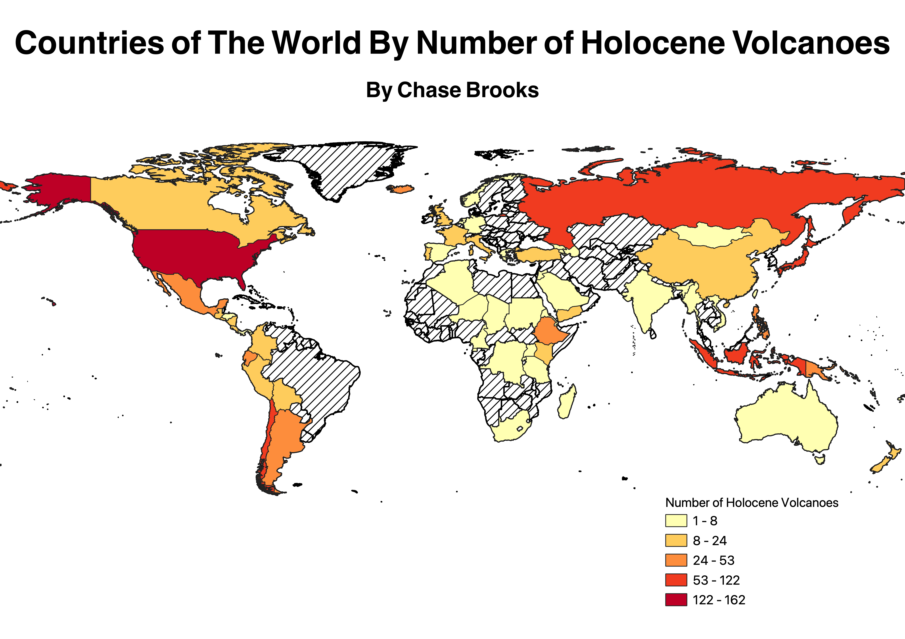

Homework 7: My Own Chorpleth!
Chase Brooks
This is a map of the countries of the world by their number of Holocene volcanoes (volcanoes active since approx. 12,000 years ago).
The data I used come from the Smithsonian Institution's Global Volcanism Project, although I created the CSV file used myself.
The world administrative boundaries shapefile I used came from opendatasoft.com and was publicly available information.
I chose this data because I think volcanoes are pretty cool.

Data used for this project
CSV dataset
Link to shapefile